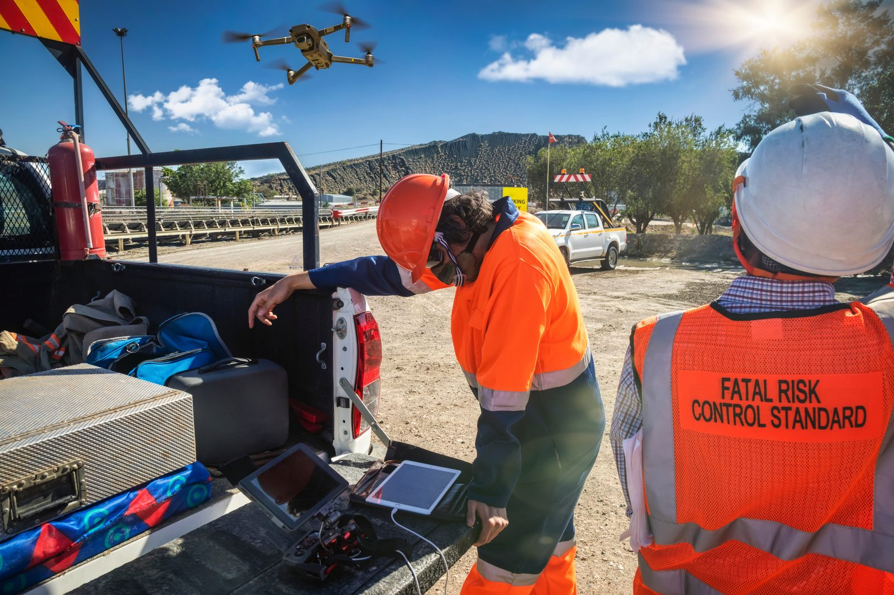
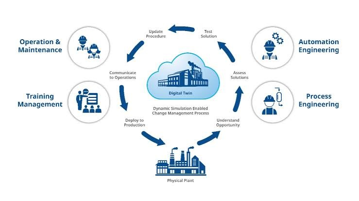
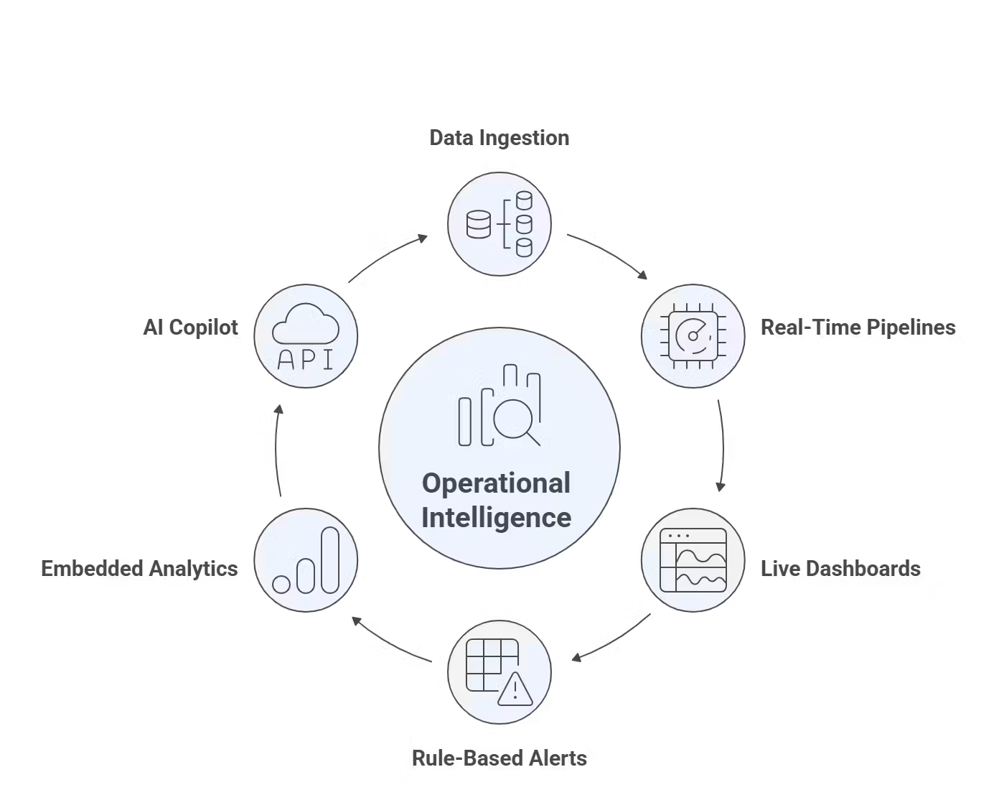

What is operational intelligence?
Modern operations generate more information than ever before.
Workforces, vehicles, equipment, environmental monitoring systems, production technologies and operational platforms continuously generate data that influences safety, productivity and operational performance.
Yet despite significant investment in technology, many organisations still struggle to answer a simple question:
What is actually happening across the operation?

- The challenge is not collecting information.
- The challenge is understanding it.
- This is where Operational Intelligence becomes important.
Moving Beyond Visibility
Most organisations already have access to operational data.

Workforce systems track people.

Fleet systems track vehicles.

Production systems measure performance.

Environmental monitoring systems track conditions.

Safety systems record incidents and controls.
Individually, these systems provide valuable information. Collectively, they often create fragmented visibility.
Operational teams are left reviewing multiple systems, dashboards and reports to understand what is happening across the operation.
Visibility improves.
Understanding often does not.
Operational Intelligence helps bridge this gap.
Rather than viewing operational information in isolation, it helps organisations understand how operational conditions interact across the entire environment.
Understanding Operational Complexity
Modern operations are dynamic environments.
These factors continuously influence one another.
For example, a ventilation issue within an underground environment may influence airflow, temperature and gas concentrations.
Those environmental changes may affect workforce exposure, productivity and operational decision-making.
Viewed independently, each condition may appear manageable.
Viewed together, they provide a clearer understanding of what is happening across the operation.
Operational Intelligence focuses on understanding these relationships.
From Data To Operational Understanding
Traditional systems often focus on answering specific questions.
Where is a worker?
Where is a vehicle?
What is the current temperature?
What is the production rate?
Operational Intelligence takes a broader view.
It helps organisations understand:
This creates a shared operational understanding that supports more informed decision-making.
The Role Of The Operational Digital Twin
One of the key technologies enabling Operational Intelligence is the Operational Digital Twin.
An Operational Digital Twin creates a live operational representation of the environment by connecting workforce activity, fleet movement, equipment, environmental monitoring, production systems and operational technologies into a shared operational view.
Rather than presenting information through disconnected systems, the Operational Digital Twin provides operational context.
This helps organisations understand how operational conditions are evolving in real time.

AI-Powered Operational Understanding
As operational environments become increasingly complex, interpreting information becomes more challenging.
AI is playing an increasingly important role in helping organisations understand operational conditions.
Rather than requiring users to review multiple dashboards and reports, modern Operational Intelligence platforms can analyse operational information and generate clear operational summaries.
For example:
Rather than presenting each condition separately, the platform can explain how those conditions are related and why they matter.
This helps organisations move from monitoring information to understanding operational impact.
Operational Intelligence Across The Organisation
Operational Intelligence creates value at every level of the organisation.
Operational Teams gain greater situational awareness.
Supervisors improve coordination and workforce management.
Site Management gains visibility into performance and operational conditions.
Executive Leadership gains portfolio visibility, benchmarking and decision support.
Asset Owners gain confidence that operations are being managed effectively.
By creating a shared operational understanding, organisations can align decisions across the entire operational hierarchy.

The Future Of Operational Intelligence
The future of operational technology is not simply more sensors, more dashboards or more data.
The future is understanding.
Organisations that can understand how operational conditions interact will be better positioned to improve safety, increase productivity and respond more effectively to change.
Operational Intelligence helps transform operational complexity into actionable insight.
Because better understanding creates better decisions.
And better decisions create better outcomes.